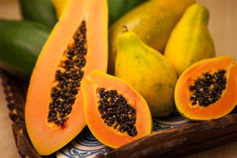
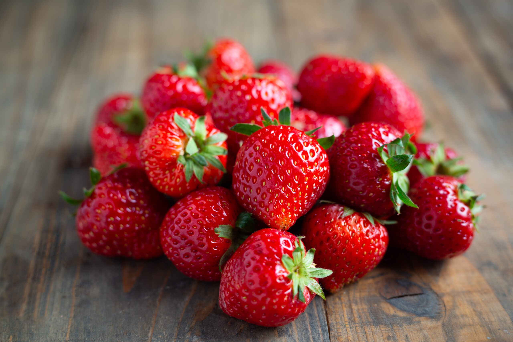
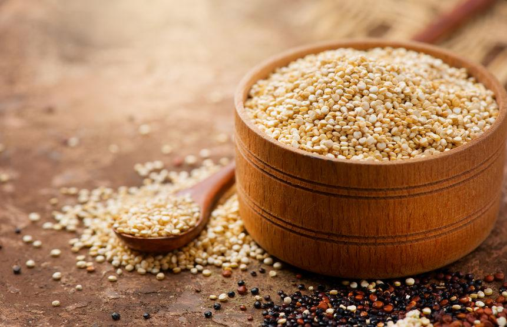
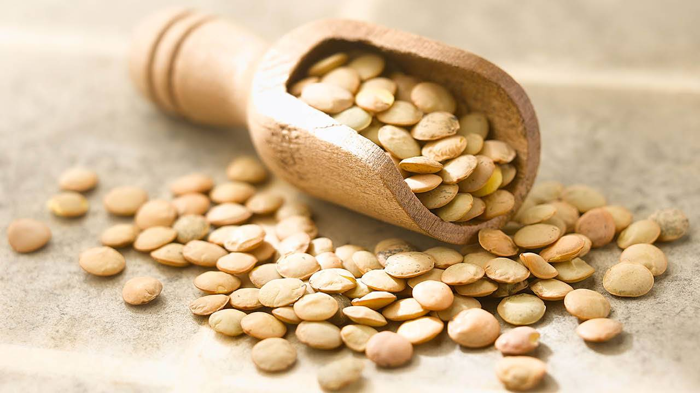
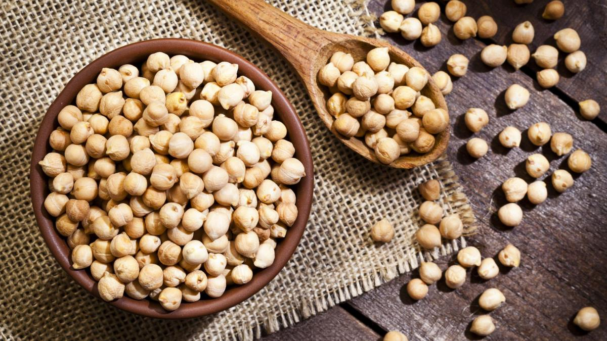
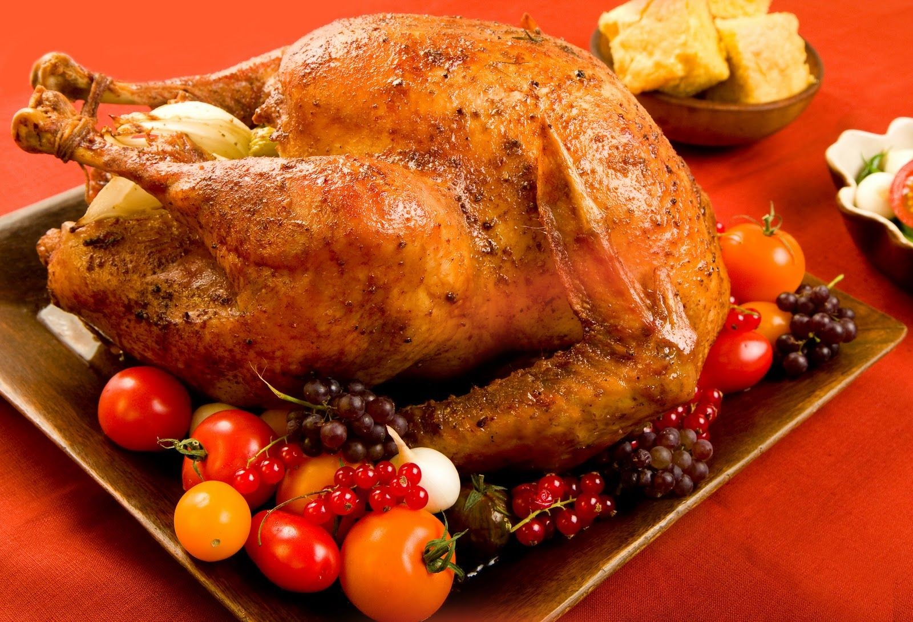
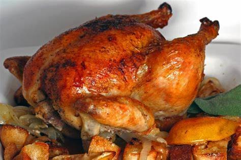
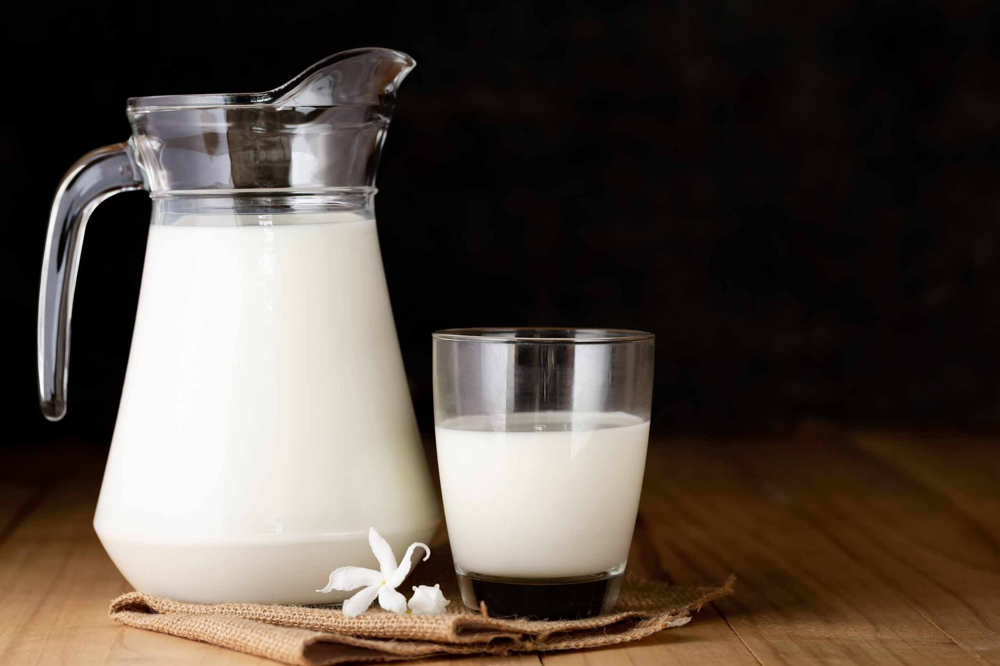
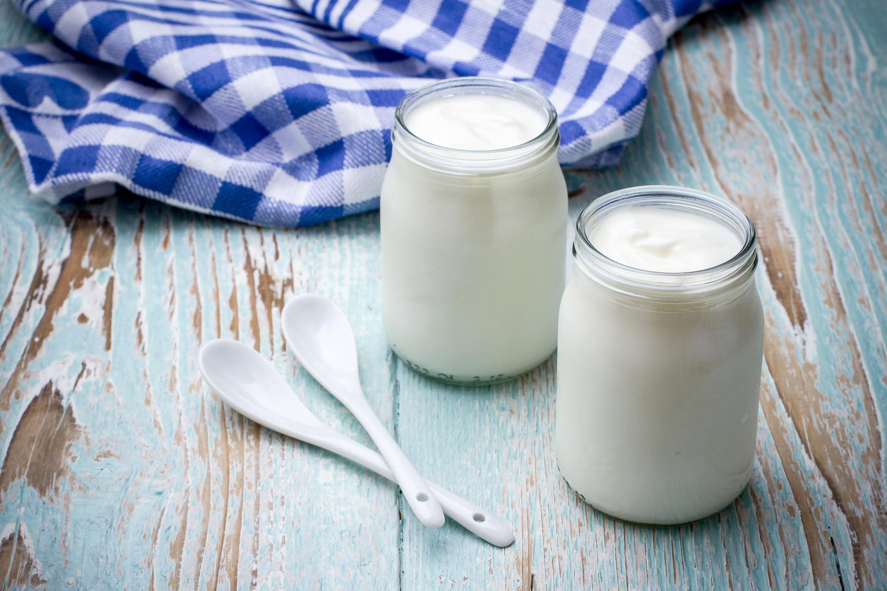
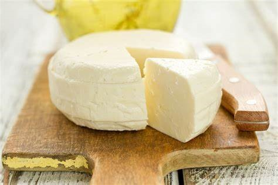

VEGETAL
- FRUTAS
- PAPAYA

- Beneficia a la piel.
- Apoya al sistema inmunologico.
- Hidrata el cuerpo.
- FRESA

- Reduce el riesgo a enfermedades cardiovasculares.
- Previene el estreñimiento.
- Controla el azucar en la sangre.
- SANDIA

- Efectos positivos en la salud mental.
- Combate enfermedades de inflamacion.
- Reduce la presion arterial.
- GRANOS
- QUINUA

- Fuente principal de proteinas.
- Alto contenido de fibra dietetica.
- Contribuye a mantener huesos saludables.
- LENTEJA

- Apoya el metabolismo energetico.
- Combate el estres.
- Rico en proteinas.
- GARBANZO

- Controla el peso.
- Mejora la digestion.
- Reduce enfermedades cronicas.
ANIMAL
- AVES
- PAVO

- Bajo en grasa.
- Bajo en sodio.
- Mantiene el nivel del colesterol.
- POLLO

- Beneficia salud cardiovascular.
- Ayuda de problemas digestivos
- Rico en vitamina B6,B3,B12.
- CODORNIZ
- Controla el nivel del colesterol.
- Contienen minerales importantes(Hierro,Zinc y Fosforo).
- Controla el nivel del colesterol.
- LACTEOS
- LECHE

- Mantiene la piel saludable.
- Favorece el crecimiento muscular.
- Hidrata el cuerpo.
- YOGURT

- Excelente fuente de calcio.
- Protege de infecciones.
- Mejora de la salud metabolica.
- QUESO

- Fortalece los huesos.
- Rico en proteinas y grasas saludables(en algunos).
- Mantiene la masa muscular.